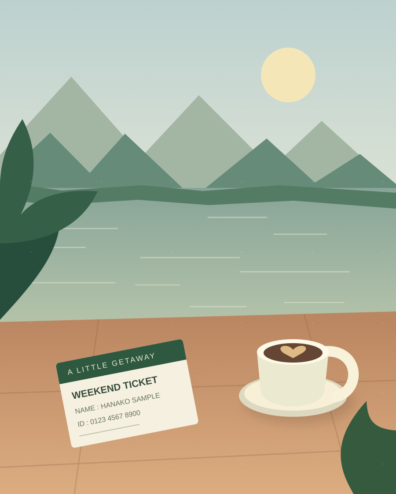

1×
01
いつもどおり、撮る。
ベータ版で利用可能
起動したら、すぐカメラ。
撮影せず「サンプルで試す」から始めることも。
好きな景色も、何気ない日常も。
写り込んだ個人情報をかんたんに隠して、
シェアする前に、ひと安心。
撮影・黒塗り・保存を使えるベータ版。サンプル画像ですぐに試せます。

気になるところを、さっと隠す。A LITTLE MORE PEACE OF MIND
カフェで撮った一枚に、名前入りのカード。
お出かけの写真に、誰かの顔や住所。
気づかずに公開してしまう前に、気になるところを自分で選んで隠せたら。camereon は、そんな「シェアする前のひと手間」を、もっと手軽にするためのカメラアプリです。
撮影から加工、保存まで。画像を外部に送らず、端末の中で完結します。
CAPTURE. COVER. KEEP.
撮ってから保存するまで、3つのステップ。
大切な写真を、もっと気軽に楽しむために。
起動したら、すぐカメラ。
撮影せず「サンプルで試す」から始めることも。
画像をドラッグして、複数箇所を黒塗りに。
取り消しや全リセットで、何度でも調整。
隠し忘れがないか、最後にチェック。
加工した JPEG を、端末の写真アプリへ。
画面はすべてイメージです。撮影・手動の黒塗り・保存は、現在のベータ版で利用できます。顔や文字の自動検出・自動黒塗りには対応していません。
YOUR PHOTOS, YOUR DEVICE.
アカウント登録も、画像のアップロードも不要。
写真の確認と加工は、あなたの端末の中で。
大切な写真を扱うからこそ、この方針を大切にしています。
個人情報の隠し忘れを完全に防ぐものではありません。公開前には、ご自身でも写真をご確認ください。
起動して「サンプルで試す」をタップ。
架空の配送ラベルで、黒塗りから保存まで体験できます。
Gemma 4 による端末内の写真の内容説明も。初回に約 2.6 GB のモデル取得が必要です。黒塗り・保存はモデルなしで使えます。
Google Play での配布はまだ行っていません。
ダウンロードした
APK を開いてインストールしてください。警告についてはよくある質問をご覧ください。
GOOD TO KNOW
試してみる前に、いくつか。
撮影・カメラ切り替えに加え、範囲を選んで複数箇所を黒塗りし、保存前に確認して新しい JPEG として保存できます。取り消し・全リセット・撮り直しにも対応しています。顔や文字の自動検出・自動黒塗りは開発中です。
起動画面の「サンプルで試す」から、架空の配送ラベルを編集できます。画像をドラッグし、「保存前に確認」→「写真に保存」で完了です。カメラの許可や AI モデルの取得は必要ありません。
写真の内容を端末内の Gemma 4 が文章で説明します。任意の追加機能で、初回は約 2.6 GB のモデル取得と作業領域が必要です。取得は一時停止・途中再開でき、アプリ内で画面を移動しても続きます。アプリ終了後は保存済みの続きから再開できます。説明には誤りや見落としがあるため、黒塗りする範囲はご自身で選んで確認してください。
現在は Android のみ対応しています。Android 11 以上の ARM64 端末でお試しいただけます。iOS 版の公開時期は未定です。
GitHub から APK を直接配布しているため、提供元の確認や Play Protect のスキャンを求められることがあります。「スキャンされたことがありません」と表示された場合は、画面にスキャンの案内があれば実行し、結果を確認してください。署名は Google による安全性の認定ではありません。有害なアプリと判定された場合はインストールを中止し、Issue からお知らせください。
アプリは写真や画像内の情報を外部に送信せず、加工と AI 解析を端末内で処理します。AI を使う場合の初回モデル取得には通信が必要です。ただし、端末の写真アプリや OS の設定によるクラウド同期は、camereon が制御するものではありません。
公開ベータ版は同じ署名鍵で配布するため、新しい APK で上書き更新できます。以前の開発用「camereon demo」を入れていた場合は、初回のみアンインストールしてからベータ版を入れてください。
ありがとうございます。GitHub Issues で受け付けています。不具合の際は、端末名・Android のバージョン・アプリのバージョンと、起きたことをお知らせください。写真などを添付する場合は、個人情報を含めないようご注意ください。